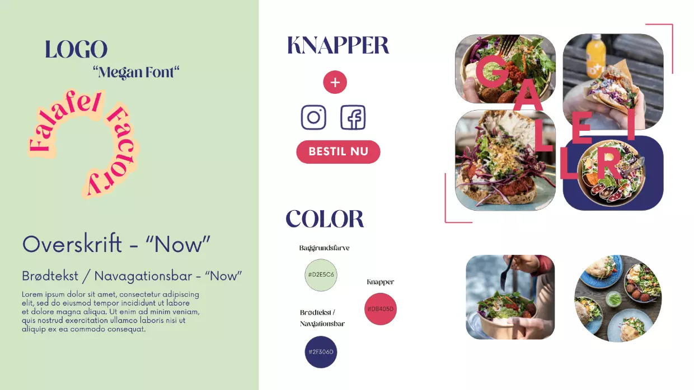

+ 05 content
01 Passionsvideo
02 Redesign

Passionsvideo
I tema 5 blev første del af interviewvideoen skabt ud fra en persons passion. Videoproduktionen blev udført ved hjælp af Adobe Premiere Pro, hvor vi lærte forskellige klippeteknikker som B-rolls (ekstra optagelser, der bruges til at understøtte hovedoptagelserne), color grading (justering af farver og tone), framing (komposition af billedet) og lyssætning. Vi brugte et spejlreflekskamera til at optage videoen og lærte om indstilling af lukkertid og blænde for at opnå den ønskede effekt. Vi anvendte også en mikrofon for at sikre en optimal lydkvalitet i optagelsen.

Redesign
I anden del af tema 5 skulle vi redesigne en virksomhedshjemmeside, og vi valgte Falafel Factory som vores case. Vi valgte Falafel Factory på baggrund af deres stærke Instagram-profil, hvor de præsenterer blikfangende billeder af deres produkter. Dog var deres nuværende hjemmeside teksttung og svær at navigere rundt på. Vores mål var derfor at skabe en billedfokuseret hjemmeside, der var nem at navigere, samtidig med at den opfordrede til mersalg. Vi ønskede at bruge billeder og visuelle elementer til at skabe en engagerende brugeroplevelse og fremhæve virksomhedens produkter på en attraktiv måde.
Designanalyse


Test af eksisterende site
Interview
I de tre interviews med forskellige testpersoner blev de bedt om at udføre en 5-sekunders test, hvor de hurtigt fik et overblik over hjemmesiden, og derefter blev de bedt om at tænke højt og dele deres umiddelbare reaktioner og tanker. Derudover stillede vi spørgsmål om de grafiske elementer og gav dem små navigationsopgaver. Testpersonerne gav udtryk for, at den nuværende hjemmeside ikke var visuelt tiltalende og manglede billeder af produkterne. De beskrev den som ikke imødekommende, "mega grimt" og svær at navigere rundt på. Disse tilbagemeldinger bekræftede vores antagelser om de mangler og udfordringer, der var i det oprindelige design. Vi tog disse feedbacks med i betragtning og brugte dem som grundlag for vores redesign af Falafel Factory's hjemmeside, hvor vi fokuserede på at forbedre det visuelle udtryk, tilføje billeder af produkterne og gøre navigationen mere intuitiv og brugervenlig.
Bert Test
I vores undersøgelse har vi brugt BERT-analyse til at analysere brugerfeedback og opnå en dybere forståelse af brugerens meninger og holdninger til det eksisterende webdesign. Ved at bedømme udsagn på en skala fra 1 til 10 har vi kunnet identificere specifikke områder, hvor de mener, der er behov for forbedringer. Resultaterne af vores undersøgelse viser, at brugerens vurderinger primært lå under 5, hvilket indikerer, at de mener, der er behov for forbedringer i designet og navigationen på hjemmesiden. Denne feedback er værdifuld i vores arbejde med at optimere brugeroplevelsen og skabe et mere tilfredsstillende webdesign. Ved at anvende BERT-analyse har vi kunnet gå ud over overfladiske observationer og opnå en dybere indsigt i brugerens holdninger og intentioner. Dette giver os mulighed for at målrette vores redesign-indsats og løse specifikke problemer og udfordringer.
lighthouse
En "Lighthouse-test" refererer normalt til en form for automatiseret webudviklingsværktøj udviklet af Google. I vores undersøgelse udførte vi en Lighthouse-test for at evaluere forskellige aspekter af det nuværende websted, herunder dets ydeevne, tilgængelighed og SEO. Testen simulerede brugeradfærd og analyserede webstedet ud fra en række kriterier.Resultaterne af Lighthouse-testen viste, at det nuværende websted scorer dårligt inden for ydeevne, tilgængelighed og SEO. Dette indikerer, at der er plads til forbedringer på disse områder. Rapporten fra Lighthouse-testen gav os specifikke anbefalinger og forslag til, hvordan vi kunne optimere webstedet og løse de identificerede problemer. Baseret på disse resultater var vores mål med vores redesign at implementere de nødvendige forbedringer for at øge ydeevnen, forbedre tilgængeligheden og optimere webstedet til SEO. Ved at tage hensyn til Lighthouse-testens anbefalinger håbede vi at opnå en bedre brugeroplevelse og en mere effektiv online tilstedeværelse.

Moodboard
Baseret på resultaterne fra vores forskellige tests var vores mål med moodboardet at skabe et mere moderne, elegant, friskt og ungt design samt forbedre navigationen på websitet. Vi lod os inspirere af billeder, hvor tekst var integreret, og vi eksperimenterede med effekten af at tegne ovenpå madvarer for at fremhæve manden som det centrale fokus. Desuden blev vi inspireret af brugen af pastelfarver. Vores moodboard blev sammensat med disse elementer i tankerne og fungerede som en visuel repræsentation af den ønskede æstetik og stemning på websitet. Ved at kombinere moderne designelementer, elegance, friskhed, ungdommelighed og enkle navigationsløsninger håbede vi at skabe en tiltalende brugeroplevelse og et visuelt attraktivt websted, der ville appellere til vores målgruppe.

Styletile
Vi besluttede at bevare en grøn baggrundsfarve, men vi gjorde den mere frisk og indbydende sammenlignet med den eksisterende grønne farve på webstedet. Vi valgte farver, der alle stammer fra råvarerne i deres falafel bowls og pitaer for at skabe en visuel forbindelse til deres produkter. Derudover redesignede vi logoet, så det bedre kunne printes på emballage med gentagende mønstre og gav det et mere moderne design. Den røde farve blev valgt som en komplementær farve til grøn, og den blev også brugt til knapper for at skabe blikfang og øge mersalget. Billederne blev behandlet med bløde kanter for at give dem en blødere og mere organisk fornemmelse, der mindede om teksturen af falafel. Disse ændringer blev implementeret for at skabe en mere sammenhængende og tiltalende visuel identitet på websitet, der ville appellere til målgruppen og give en mere behagelig brugeroplevelse. Farverne og designelementerne blev omhyggeligt valgt for at afspejle virksomhedens produkter og skabe en harmonisk visuel æstetik.

Prototype


Video
Videoen er blevet redigeret til at have slowmotion-effekter og close-ups af madvarer og personalet. Der er blevet tilføjet et etableringskørsel ved starten af videoen for at give seerne en fornemmelse af stedet, hvor handlingen finder sted. Der er lagt særlig fokus på brødrene, der ejer butikken, og deres charme og flirtende adfærd er blevet fremhævet for at skabe en engagerende og underholdende oplevelse for seerne samt stimulere til mersalg. Videoen er blevet colorgraderet med et mørkt slør for at skabe mere kontrast og visuel dybde, samtidig med at overskrifterne ovenpå videoen bliver tydeligere og mere iøjnefaldende. Denne redigeringsteknik hjælper med at skabe en mere professionel og visuelt tiltalende video, der fanger seernes opmærksomhed og skaber en stemning af kvalitet og elegance. Disse ændringer i redigeringen af videoen sigter mod at øge tiltrækningskraften og indflydelsen af videoindholdet. Ved at fokusere på madvarer og personalet samt skabe en visuel kontrast og en følelse af eksklusivitet, kan videoen bidrage til at vække interesse hos seerne og motivere dem til at udforske og købe produkterne fra Falafel Factory.
Test af rededesign
Interview
Interviewpersoner var generelt glade for de nye design og synes, at det var blvet meget nemmere at navigere rundt på sitet. De havde kun nogle få designmæssige rettelser, som vi rettede til.
berttest
I BERT fik den redesignet hjemmesidde også svar over 5, hvilket indikerer vi har opnået et bedre design og brugeroplevelse.
lighthouse
I lighthouse testen havde vi også forbedret ydeevne, tilgængelighed, bedste praksis og SEO (søgemaskineoptimering), som kan nedenstående klip fra lighthouserapporten


Fremtidsperspektiv